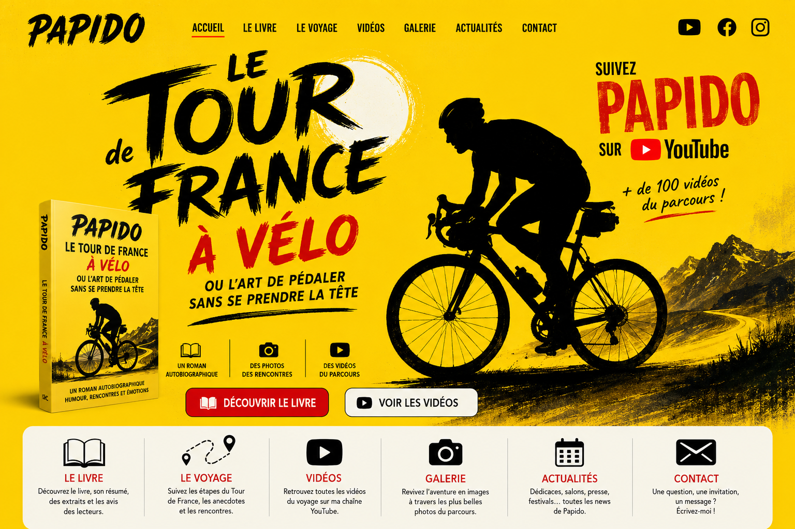

les photos
Photos du voyage et souvenirs.



Cette aventure se résume en un mot : « Gentillesse ». J'ai croisé des personnes formidables tout au long de ce voyage, qui m'ont accompagné et soutenu avec une grande douceur. Les relations humaines, même brèves, apportent énormément. Elles offrent chaleur, réconfort et l'envie d'avancer. C'est un peu comme lorsque j'aperçois un lapin ou une biche sur mon chemin : Ce petit instant suffit à illuminer ma journée.
📖 Découvrir le livre
7000 km. Le tour de France sur un vieux vélo électrique, sans plan ni équipement dernier cri — juste une tente, une popote, et la conviction que tout finit par s'arranger. De la Charente à l'Alsace, en passant par Cherbourg et Marseille, il raconte les galères (batteries mortes, matelas dégonflés, bornes électriques traquées derrière les églises) et les moments de grâce qu'on ne trouve qu'en allant lentement : un renard dans une écluse, le Mont-Saint-Michel depuis un sac de couchage, un maire qui dépanne un inconnu. Un récit drôle et sincère, à hauteur de guidon.
Retrouvez toute l'aventure sur YouTube.
▶ Voir les vidéos
www.laventurepapido.fr